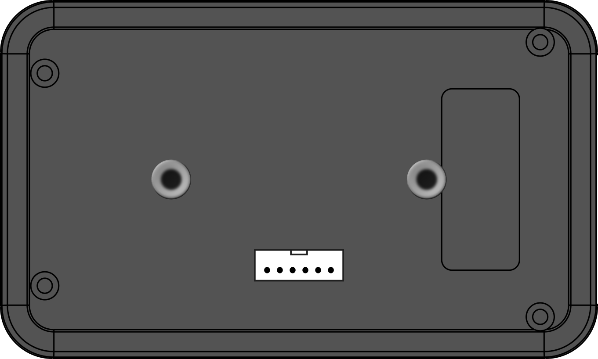

CHAPTER 01Safety precautions
CHAPTER 02Parts
 12345678
12345678| No. | Name | Function |
| 1 | Red button (STAGE / CALIB) | Short press: stage timing. Long press on the clock screen: distance calibration. |
| 2 | Blue button (NEXT / SETUP) | Short press: switches the upper display. Long press: settings (brightness, pulses, unit, Trip B display). |
| 3 | Upper right CLR (CLOCK ADJ) | Acts on the upper display (reset etc.). Long press on the clock screen: clock adjust. Increases the value while setting. |
| 4 | Lower right CLR (F / N / R) | Short press: resets Trip B. Long press: switches the direction. Decreases the value while setting. |
| 5 | Upper display | Clock, Trip A, speed, final time or stage records. |
| 6 | Lower display | Trip B (section distance). |
| 7 | White LED (direction) | Off: forward (F). On: stop (N). Blinking: reverse (R). |
| 8 | Blue LED | Final time warning (chapter 10). |
Side: 3.5 mm jack for the remote (Trip B reset). Right side: power switch at the top (rocker switch: | ON / ○ OFF) and driver display connector at the bottom (Molex Mini 6-pin).
Rear: 6-pin connector for power, speed pulse and external switches, and mounting insert nuts (chapter 14).
CHAPTER 03Power and clock
Power
- Connect DC+12V and GND of the rear connector to the vehicle.
- The rocker switch at the top of the right side is the power switch. Press the | side for ON and the ○ side for OFF.
- The clock runs on the built-in real-time clock (RTC) and keeps running on its backup battery while the power is off.
Clock adjust
- On the clock screen, long press the upper right CLR.
- Upper right CLR adds 1 to the blinking digit (hours, minutes, seconds), lower right CLR subtracts 1. The blue button moves to the next digit.
- Press the red button to confirm. To leave without changing, long press the upper right CLR.
Clock battery
If the clock stopped because its backup battery ran out, “bAt Lo” is shown on the upper display for 2 seconds at power-on, and the whole time blinks on the clock screen. Meanwhile the final time screen shows “Ft rtc”. Set the clock to return to normal.
Time hold
On the clock screen, a short press of the upper right CLR keeps showing the time at the moment you pressed, blinking. Press again to return.
CHAPTER 04Switching the upper display
Each short press of the blue button switches the upper display as below. The lower display normally always shows Trip B.
| Screen | Upper display | Example |
| Clock | h.mm.ss | |
| Trip A | Total distance (km) | |
| Speed | “S” followed by the calibrated speed (km/h) | |
| Final time | Ahead / behind against the Ave (chapter 10) | |
| Stage records | Stage time. The lower display shows the record number |
After stage records, the display returns to the clock.
CHAPTER 05Trips (Trip A / Trip B)
Resetting the trips
On the Trip A screen, a short press of the upper right CLR resets Trip A, and a short press of the lower right CLR resets Trip B. Trip B can also be reset on the clock, speed and final time screens and during a stage.
Trip A display unit
With the “Unit” setting, Trip A is shown in 1 m steps (12.345) or 10 m steps (12.34) (chapter 11).
Direction
Each long press of the lower right CLR switches forward (F) → stop (N) → reverse (R) → forward (F).
| Direction | Action | White LED |
| F | Distance increases. | Off |
| N | Distance stops. | On |
| R | Distance decreases (e.g. to recover after a wrong turn). | Blinking |
It works on Trip A, Trip B and Trip D on the driver display.
CHAPTER 06Distance calibration
When the displayed distance does not match the road book, adjust it with the calibration factor.
Example: a section of 10.00 km in the road book shows 10.20 km on Trip A.
- On the clock screen, long press the red button to enter calibration (C).
- Upper right CLR adds 1 to the blinking digit, lower right CLR subtracts 1. The blue button moves to the next digit.
- Set 10.20 ÷ 10.00 = 1.0200.
- A short press of the red button saves and returns to the clock.
A long press of the red button during calibration returns the factor to 1.0000. The factor also applies to the speed display. Set the number of pulses for your vehicle first (chapter 11).
CHAPTER 07Speed and maximum speed
The speed screen shows “S” followed by the calibrated speed. A short press of the upper right CLR shows the maximum speed (P); press again to return. The maximum speed resets to 0 when a stage starts.
CHAPTER 08Speed alert
- On the speed screen, long press the upper right CLR to open the speed alert setting (A).
- Upper right CLR adds 10, lower right CLR subtracts 10 (10–90 km/h).
- The red button turns the alert ON and returns to the speed screen, which then shows “A”.
- To turn it OFF, open the setting and press the blue button.
| Speed | Upper display / white LED on the driver display |
| Up to 5 km/h below the limit | Normal display |
| From 5 km/h below the limit | Blinks slowly |
| At or above the limit | Blinks fast |
CHAPTER 09Stage timing and stage records
Stage timing
- A short press of the red button starts a countdown to 00 s of the next minute. Trip A and Trip B are reset to 0 automatically.
- If the car starts moving during the countdown (3 speed pulses), the stage starts at that moment. If it does not move, the stage starts at 00 s. You can also press the red button during the countdown to start immediately.
- While running, the upper display shows the stage time. The blue button switches time ⇔ Trip A (the “S” on the left blinks while Trip A is shown).
- Every 1 km, the passing time blinks for 3 seconds.
- Press the red button at the finish. The time blinks and Trip B returns to 0.
- Press the red button again to end the stage. The clock screen shows the finish time blinking (clear it with the upper right CLR or the red button).
The blue button cancels during the countdown. On the stage screen, the upper right CLR leaves the stage screen. The external switch (stage) does the same as the red button.
Stage records
Switch the upper display to “stage records” to view the recorded times. The lower display shows the record number (St01–St30). Upper right CLR shows the next record, lower right CLR the previous one. Up to 30 records are kept; they are lost when the power is off.
CHAPTER 10Ave and final time
When an Ave (target average speed) is set, the final time shows the difference from driving at the Ave, based on the distance and elapsed time since the stage start. When the Ave is OFF, “OFF” is shown.
How to set
- On the final time screen, a short press of the upper right CLR opens the Ave setting.
- Set the Ave on the lower display with the upper right CLR: OFF → 30 → 40 … The blue button moves to the next digit.
- The upper display shows the start time. It is set automatically to the start time when a stage starts.
- Long press the upper right CLR to save (the distance so far is kept). Saving with the red button restarts the distance from that point.
CHAPTER 11Settings (brightness, pulses, unit, Trip B display)
Long press the blue button to enter the settings; each short press of the blue button moves to the next setting. The last press returns to the previous screen.
| Order | Display | Setting | Operation |
| 1 | LEd | Brightness (3 levels, 0 to 2). | Upper right: brighter / lower right: dimmer |
| 2 | PULS | Speed pulses (2, 4, 8). Set to match the vehicle. | Upper / lower right: switch |
| 3 | Unit | Trip A unit. “1” is 1 m (12.345), “10” is 10 m (12.34). | Upper / lower right: switch |
| 4 | tr- | Trip B display. “0.01” is normal (12.34 km); “10” enlarges distances under 10 km (1.230 km). | Upper / lower right: switch |
The settings are kept when the power is off.
About the Trip B distance format
The “10” mode is mainly for recce: it lets you judge the length of straights and corners in 10 m steps. Seeing 10 m, 20 m … makes it easier to write clear pace notes.
CHAPTER 12Remote and external switches
Remote (3.5 mm jack)
Connect the supplied remote to the 3.5 mm jack on the side to reset Trip B from your hand.
| Button | Function |
| Remote (supplied) | Resets Trip B |
Mount it near the steering wheel or gear lever to reset Trip B at each road book box without reaching for the unit.
External switches (rear connector)
| Wire | Function |
| White (Trip B reset) | Trip B reset only. A short press resets Trip B. Useful for adding a foot switch. |
| Yellow (Stage) | Adds only the red button’s stage function (start / finish). A long press does nothing (it does not open calibration). |
CHAPTER 13Driver display (optional)
Connect a driver display to the connector on the lower right side (Molex Mini 6-pin) to show a dedicated trip (Trip D) in front of the driver.
| Item | Details |
| Display | Trip D (km). Under 10 km it is enlarged, e.g. 1.230 km. |
| Reset | The reset button on the driver display resets Trip D. It also returns to 0 at the stage start and finish. |
| White LED | Lights in step with the blinking upper display while the speed alert is ON. |
| Direction | Counts according to F / N / R, the same as the main unit. |
CHAPTER 14Rear panel (mounting, connector)

M4M449 mm123456Mounting insert nuts
Two mounting nuts are embedded in the rear, so the unit can be bolted to a bracket or mount.
| Item | Details |
| Bolt | M4 |
| Bolt length | Up to the thickness of the mounting part (bracket etc.) + 10 mm |
| Nut spacing | 49 mm (centre to centre). RAM Mount bases with the same spacing can be used. |
Connector (XA 6-pin)
| Pin (from the left, seen from the rear) | Use |
| 1 | DC+12V (power) |
| 2 | GND |
| 3 | SPD (vehicle speed pulse input) |
| 4 | White: external switch (Trip B reset) |
| 5 | Yellow: external switch (stage) |
| 6 | GND (also usable for the external switches) |
CHAPTER 15Specifications
| Item | Details |
| Dimensions | W 115 × H 69 × D 28 mm (excluding buttons and other protrusions) |
| Power | DC12V (rear connector), power switch on the right side. No USB power. |
| Distance / speed | Measured from the vehicle speed pulse. Pulses 2, 4 or 8; calibration factor 0.0000–2.9999 |
| Clock | Built-in real-time clock (RTC) with backup battery; a dead battery is shown on the display |
| Memory | Trip A / Trip B distances (every 50 m), calibration, pulses, unit, Trip B display format, brightness, speed limit, Ave settings (stage records are lost when the power is off) |
| Connections | Rear XA 6-pin connector (power, speed pulse, external switches), remote (3.5 mm on the side), driver display (Molex Mini 6-pin, lower right side) |
| Supplied accessory | Remote (Trip B reset) |
| Options | Driver display |
CHAPTER 16Quick reference
| Screen | Blue | Red | Upper right CLR | Lower right CLR |
| Clock | Short: next screen Long: settings | Short: stage Long: calibration | Short: time hold Long: clock adjust | Short: Trip B reset Long: direction |
| Trip A | Short: next screen | Short: stage | Short: Trip A reset | Short: Trip B reset Long: direction |
| Speed | Short: next screen | Short: stage | Short: speed ⇔ maximum Long: speed alert setting | Short: Trip B reset Long: direction |
| Final time | Short: next screen | Short: stage | Short: Ave setting Long: stop the display | Short: Trip B reset Long: direction |
| Stage records | Short: to clock | Short: stage | Next record | Previous record |
| Stage | Countdown: cancel Running: time ⇔ Trip A | Countdown → start → finish → end | Leave the stage screen | Trip B reset |
| Setting screen | Upper right | Lower right | Blue | Confirm / back |
| Calibration (C) | +1 | −1 | Next digit | Red short: save / Red long: 1.0000 |
| Clock adjust | +1 | −1 | Next digit | Red: confirm / Upper right long: back |
| LEd / PULS / Unit / tr- | + / switch | − / switch | Next setting | Last blue press returns |
| Speed alert (A) | +10 | −10 | Back with alert OFF | Red: back with alert ON |
| Ave setting | + | − | Next digit | Upper right long: save / Red: save and restart the distance |
An animated manual is also available: manual.rally-arm.com